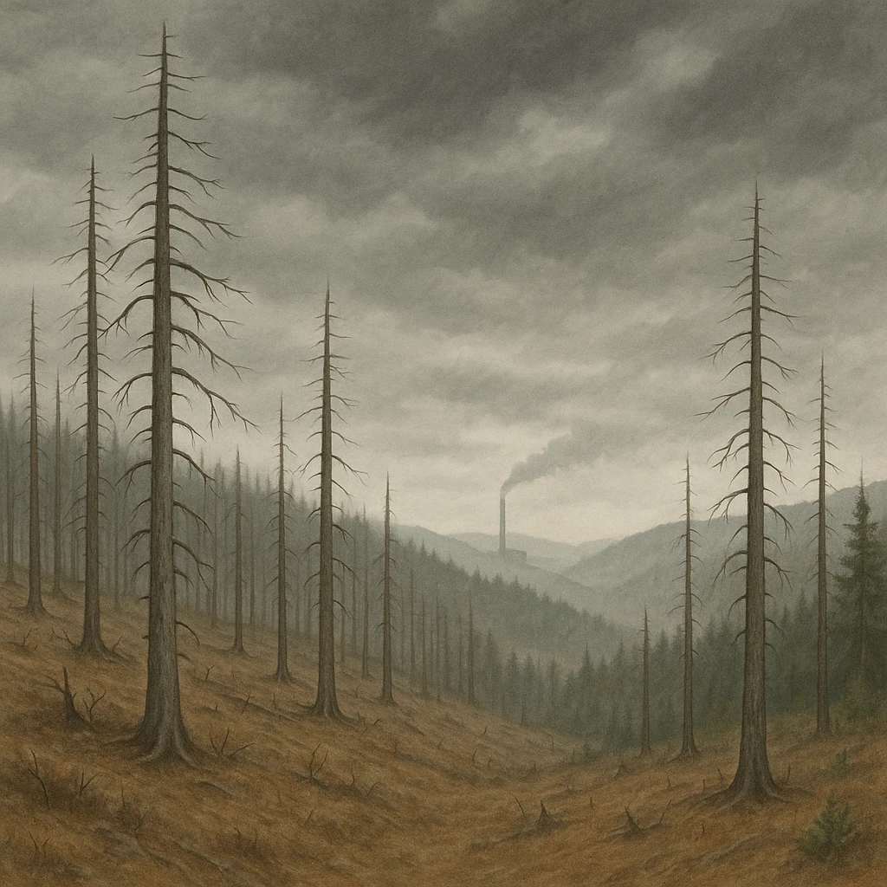
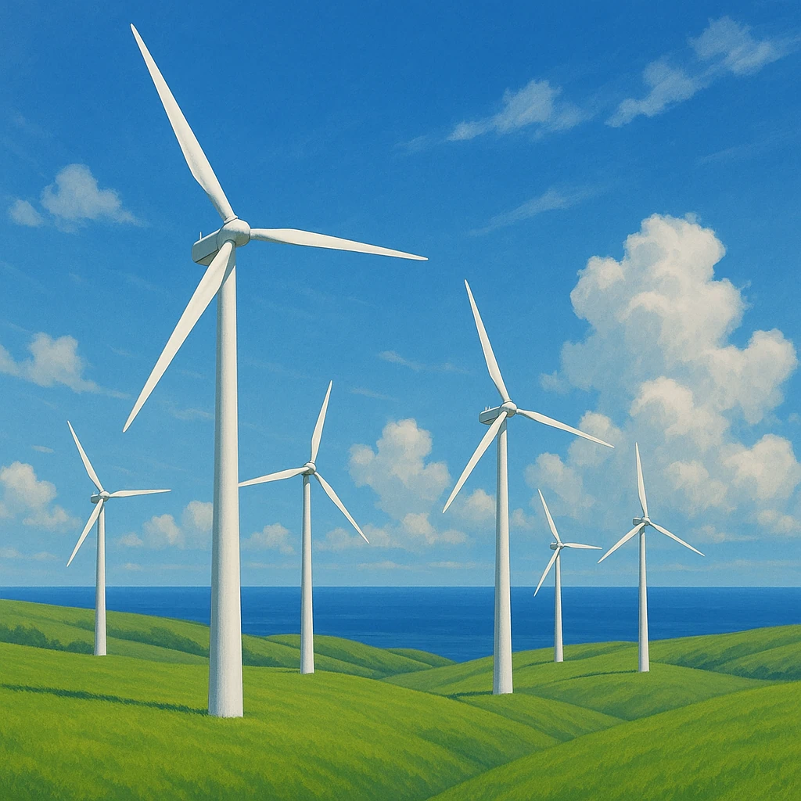

Ⅲ-5
持続可能な社会へ
国境をこえて、みんなで
環境
を守る
①
酸性雨
工場や自動車の
亜硫酸ガス
が原因。森林が枯れ、湖の魚が死ぬ。
②
水質汚染
ライン川
など、利用する国が協力して水質改善を行う。
③
地球温暖化
温室効果ガス
を減らすため、
風力発電
などが盛ん。
④
ごみ問題
リサイクル率
が高い。渋滞・大気汚染対策に
自転車
も活用。


共通点
どれも
1国だけでは解決できない
問題。だからEUの国々は
協力
して取り組む。これが「持続可能な社会」への道。
第5章 ヨーロッパ州
SEED EDUCATION